Python ·
C++ (AnimNodes) ·
Niagara ·
Character Rigging ·
Shader Development ·
Substance Painter ·
Substance Designer
Familiar
Unity ·
USD ·
PyTorch ·
After Effects ·
Blender
Production
Perforce ·
Git ·
Optimization
Specializations
Motion Capture Systems ·
Pipeline Automation ·
Real-Time Rendering ·
Team Leadership ·
AI Integration
About
Technical Artist with 4+ years of production experience.
Built the real-time mocap pipeline at SuperPlastic that shipped 256+ videos
to 232M views (1M subscribers in one month).
Led 5 artists from offline to real-time UE5 rendering.
Currently focused on AI-assisted content creation workflows.
Looking for Technical Artist or Creative Technologist roles.
Open to relocation.
Committee recommended for SIGGRAPH 2026 submission
Original finding: 37% AI confidence calibration gap
1M YouTube subscribers in 1 month (SuperPlastic)
Burlington sculpture approved by city council and built
Guest Lecturer, UVM (2 semesters)
SuperPlastic Real-Time Pipeline
Role:Lead Technical Artist
Duration:~2 years (Mar 2022 - Dec 2023)
Team:5 artists
The Problem
SuperPlastic needed to produce high-volume animated content for YouTube Shorts
but was bottlenecked by overnight RenderMan renders per shot. Traditional offline
rendering couldn't scale to social media's pace.
The Solution
Built end-to-end real-time mocap pipeline in Unreal Engine 5. Managed mocap lab
(Manus gloves, Xsens suit, Faceware) with weekly capture sessions and 2 actors.
Wrote a custom C++ AnimNode that handled full-body and face retargeting at runtime.
Reduced render time from overnight to 10 seconds per frame.
Technical Highlight: C++ AnimNode
Maya rigs had 20+ bones per limb — impossible to export cleanly to UE5. Built a
custom engine-level AnimNode that handled body retargeting, face retargeting,
finger jitter correction, and bone locking. Also built a morph target library
for facial expressions beyond Faceware's capture range, keeping characters on-model.
Same node supported both live mocap streaming and baked Maya animation playback.
Additional Technical Scope
Asset Pipeline
Converted 100+ Maya assets to UE5. Optimized materials, LODs, draw calls, and collision for real-time.
Control Rigs
Set up Control Rigs for 7 characters so animators and lighters could tweak in-engine without round-tripping to Maya.
VFX & Destruction
Created Niagara VFX and Chaos destruction systems. Built vehicle animation capture with Take Recorder. Reused across productions.
Virtual Production
Prototyped virtual production with VCams and real-time VTuber streaming. VCam used for shot direction.
Environment Capture
Used photogrammetry to capture mocap room for 1:1 virtual environment recreation.
Pipeline & Tools
Scaled Perforce to 10+ artists. Wrote Python tools for Maya including UV channel validator used by 5 artists.
Quality Control
First-line approval for 100+ YouTube Shorts. Reviewed all team animations before Animation Head sign-off.
Hand-drawn storyboards enable rapid visualization in animation and game development, but translating 2D sketches into 3D scenes requires considerable manual effort. This thesis presents StoryboardTo3D, an Unreal Engine 5.6 plugin that automates storyboard-to-3D translation using vision-language models. The system implements a multi-angle capture framework (7 viewpoints) and iterative positioning refinement with AI feedback loops.
The Problem
Translating 2D storyboards into 3D scenes requires hours of manual camera placement, object positioning, and depth interpretation. Existing research prototypes convert text-based screenplays into preliminary scenes but do not efficiently translate visual storyboard sketches into 3D layouts using production asset libraries.
The Solution
An Unreal Engine 5.6 plugin with modular AI provider abstraction supporting three backends (Claude Sonnet 4.5 Extended Thinking, ChatGPT-4o, LLaVA-13B). The system's primary value is time-shifted automation: users initiate positioning processes that run unattended—including overnight batch processing—and return to completed 3D scenes. While processing takes 4–41× longer than expert manual work (1.7 min baseline), it runs without human labor, enabling workflows for storyboard artists and indie developers who lack Unreal Engine expertise.
System Pipeline
Seven-stage iterative refinement loop: analyze → generate → capture multi-angle → AI feedback → adjust → repeat until convergence.
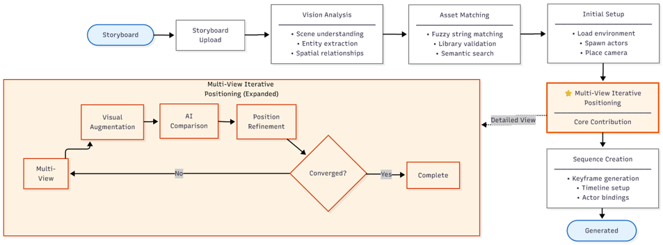
Example Output
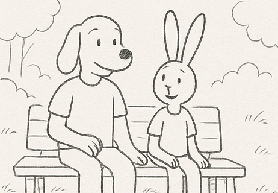
Input storyboard
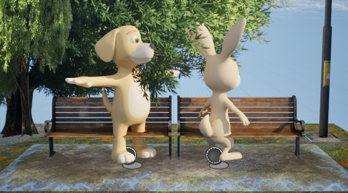
Generated 3D scene
Plugin Interface
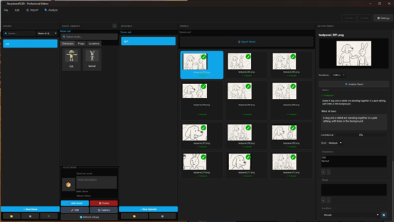
Multi-Angle Capture Architecture
Seven-viewpoint sequential capture system provides comprehensive spatial context for AI analysis. Six scout camera positions (front, back, left, right, top, 3/4 view) plus one hero camera expose positioning errors invisible from single viewpoints—depth misjudgments, occlusion issues, rotation errors.
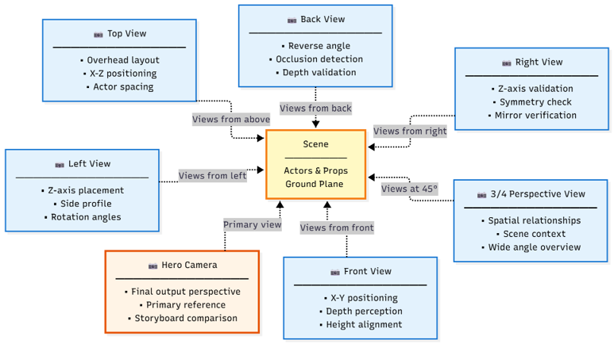
Figure 4.3: Seven-camera validation architecture—each viewpoint exposes different spatial errors.
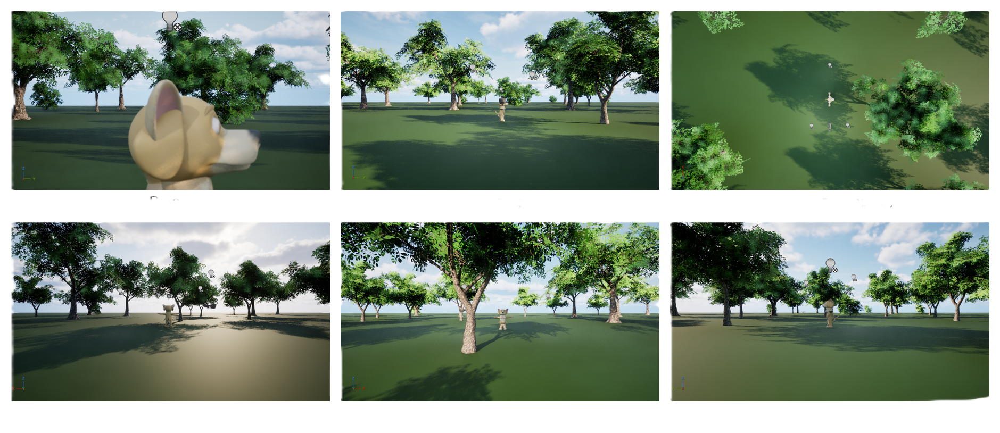
Figure 5.4: Camera perspectives from a single iteration—front, right, back, left, top, 3/4, and hero views.
Research Scope
36
Test Scenarios
3
VLMs Compared
12
Storyboard Panels
7
Camera Viewpoints
7.8–22.2
Avg Iterations/Panel
30
Max Iterations
Novel Finding: AI Score Hallucination
Expert validation revealed a 37.2% calibration gap between AI self-reported confidence (84.4% average) and actual positioning success (47.2% average). Vision-language models systematically assign high confidence scores to objectively inaccurate spatial compositions.
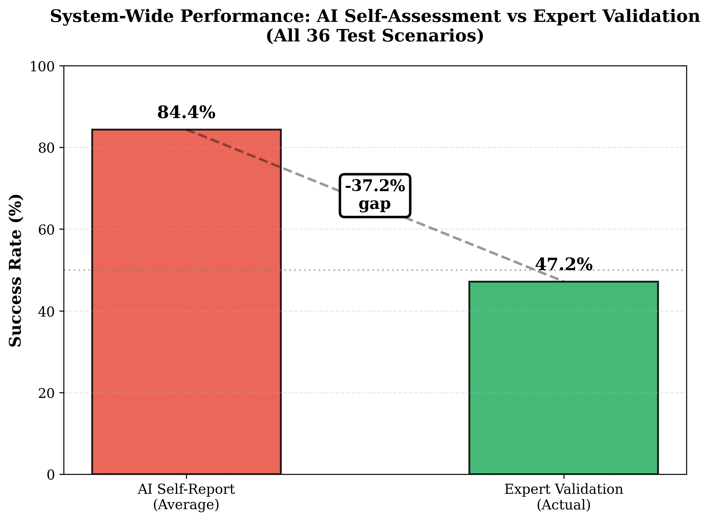
Figure 5.3: The 37.2% gap between what AI models report and actual positioning quality.
Model Performance Comparison
Expert validation across 12 panels × 3 models revealed dramatically different calibration patterns despite similar self-reported scores.
Model
Actual Success
Calibration Error
Avg Iterations
Convergence
Time/Panel
Cost/Panel
Claude Sonnet 4.5
83.3%
+1.5%
22.2
41.7%
69.1 min
$0.94
LLaVA-13B
41.7%
+42.9%
7.8
91.7%
7.8 min
$0.00
ChatGPT-4o
16.7%
+67.1%
12.5
75.0%
33.7 min
$0.25
Table 5.4: Expert manual positioning baseline: 1.7 min/panel. Automated time ranges 4.6–41× longer but runs unattended.
Cost vs Quality Tradeoff
Three-dimensional tradeoff visualization for production decision-making: cost per scene, processing time, and expert-validated success rate.
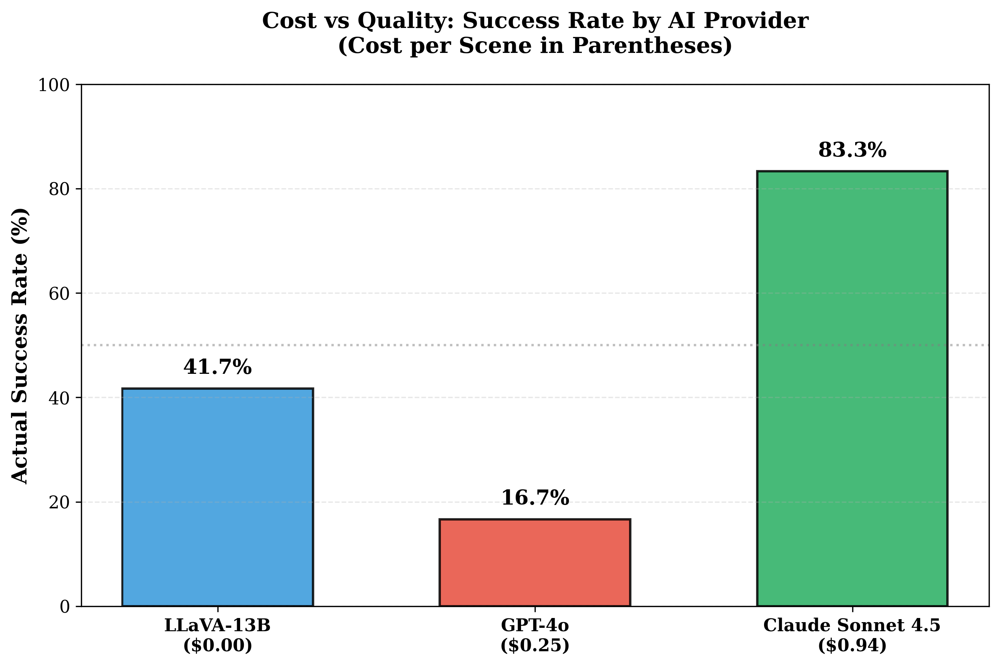
Figure 6.1: Claude achieves highest quality (83.3%) at highest cost ($0.94/panel). LLaVA offers free local inference with moderate success (41.7%).
Panel-by-Panel Analysis
Granular success comparison across all 12 test panels × 3 models reveals per-scenario performance patterns.
All three models failed positioning on the same geometry, yet reported dramatically different confidence scores. ChatGPT-4o and LLaVA-13B scored 85/100 claiming "nearly perfect" positioning with "no visibility issues." Claude scored 70/100 and correctly identified "CRITICAL MISMATCH" with camera occlusion by bench.
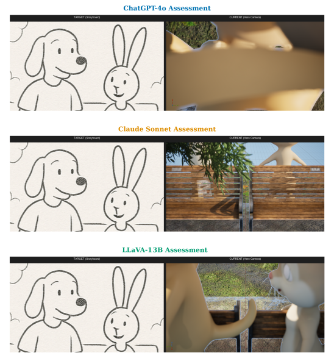
Panel 9: Identical geometry, divergent AI assessments. Only Claude identified the critical occlusion failure.
Research Contributions
System Contribution
First minimum viable product achieving automated storyboard-to-3D positioning using a 3D asset library in Unreal Engine with modular AI provider abstraction.
Research Contribution
Discovery and documentation of AI Score Hallucination—systematic over-confidence in VLM spatial reasoning (37.2% calibration gap) with implications for any AI system using autonomous termination logic.
Architecture Contribution
Seven-viewpoint sequential capture system providing comprehensive spatial context for AI analysis, exposing depth misjudgments, occlusion issues, and rotation errors invisible from single viewpoints.
Methodological Contribution
MVP evaluation methodology that reframes value proposition from "accelerating hands-on workflows" to "enabling time-shifted automated positioning" for users lacking technical artist expertise.
Traditional character pipelines (concept → model → rig → mocap setup) take
days to weeks. Small teams and indie developers can't afford this for
prototyping or rapid content creation.
The Solution
Developed a workflow using AI-assisted modeling (Rodin AI) combined with
automatic rigging to produce mocap-ready characters with dynamics (tail simulation)
in approximately one hour. Demonstrated full integration with Rokoko capture system.
Process
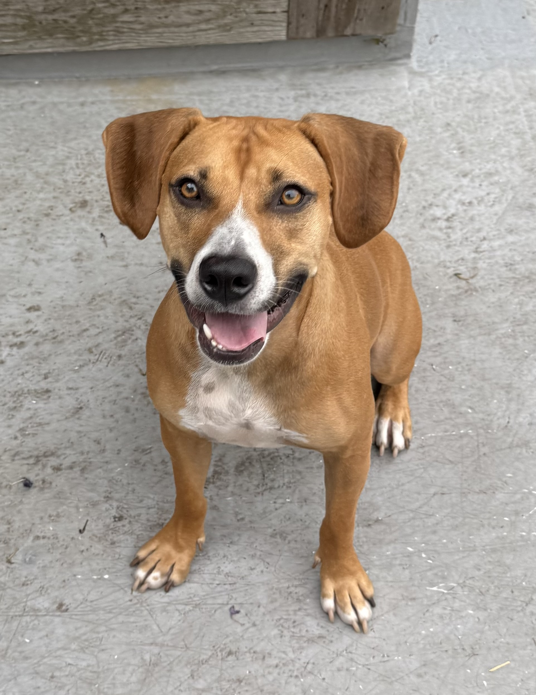
Reference photo
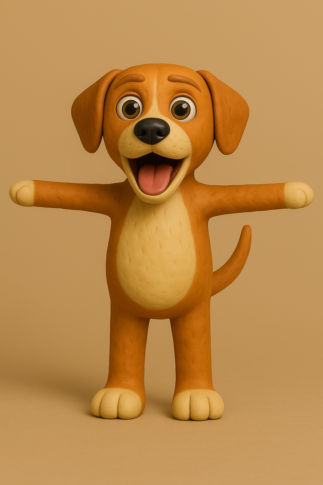
AI concept (ChatGPT)
Rodin AI output
Maya remesh & cleanup
Facial Setup
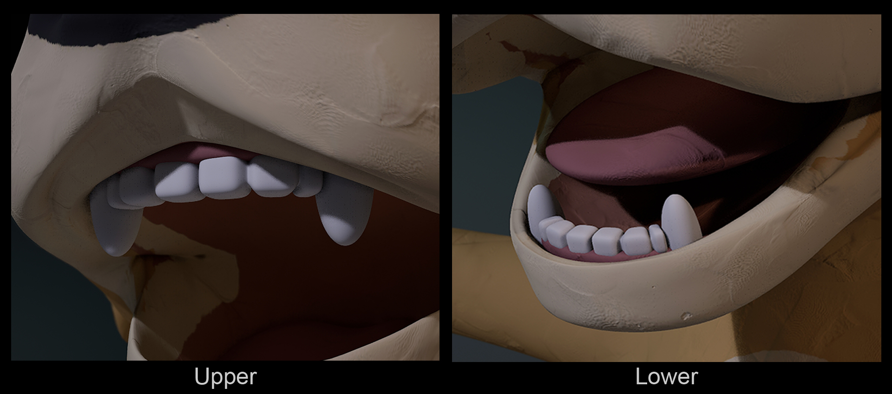
Mouth interior: teeth, tongue, and gums for facial capture
Create a game with novel interaction that doesn't rely on traditional
controller input. Explore voice as a primary input method for real-time
gameplay.
The Solution
Built a robot combat game controlled entirely through voice commands.
Player issues verbal orders to their robot during battle (move, attack,
defend). Demonstrates interaction design thinking beyond traditional inputs.
Tools
UnityVoice Recognition APIC#
Password Protected
This work is under NDA. Enter password to view.
Password available in resume or upon request.
Real-Time Visualization Pipeline
Role:Technical Artist / Pipeline Developer
Client:Studio Projects
Status:Approved & Built
Technical Challenge
Built a real-time visualization pipeline for architectural review. Integrated
Google 3D Tiles via Cesium for accurate geospatial site placement in downtown
Burlington. Developed day/night lighting system with UE5 path tracing to show
how the sculpture would interact with actual environmental lighting conditions.
Pipeline enabled rapid iteration during city council presentation.
Day/Night Lighting System
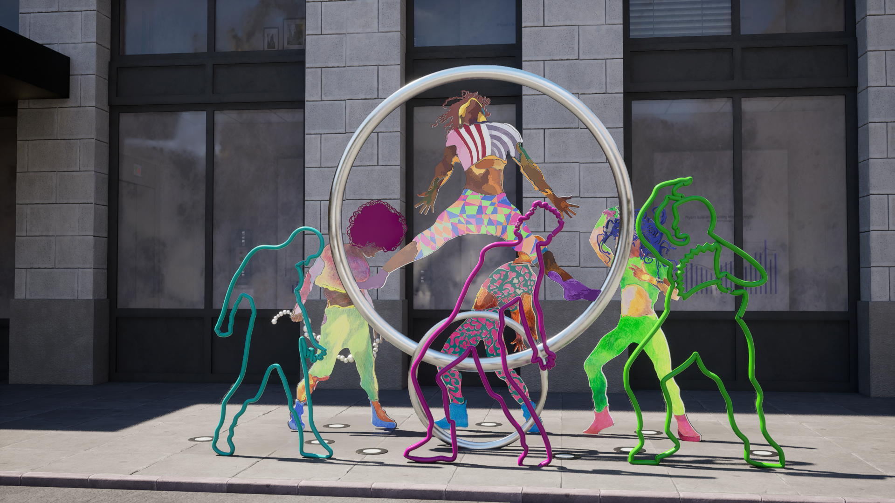
Path-traced daylight GI
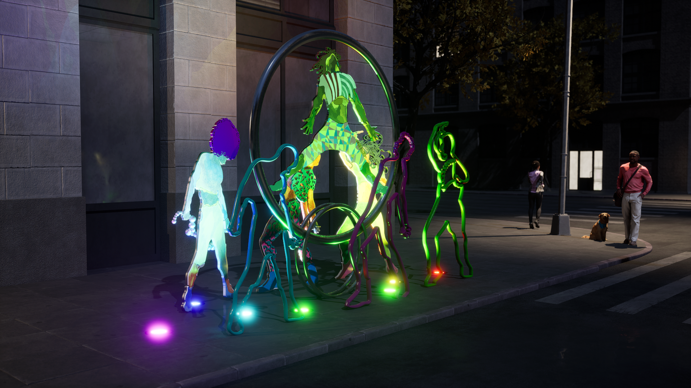
Night with street lighting
Result: Built
Visualization approved by city council. Sculpture fabricated and installed on site.
Tools
Unreal Engine 5.1Path TracingCesium for UnrealGoogle 3D TilesMayaSubstance Painter
VictorVictor × Nike
Role:3D Visualization Artist
Client:VictorVictor
Status:In Development
⚠️ Work shown under NDA. Please do not distribute.
The Project
Graphic designer working on a VictorVictor × Nike footwear collaboration
needed to evaluate designs before production. 2D mockups weren't representing
material behavior accurately. Created photorealistic 3D renders showing
materials (leather, mesh, rubber, metallic elements) from multiple angles
for internal design review.
Colorways
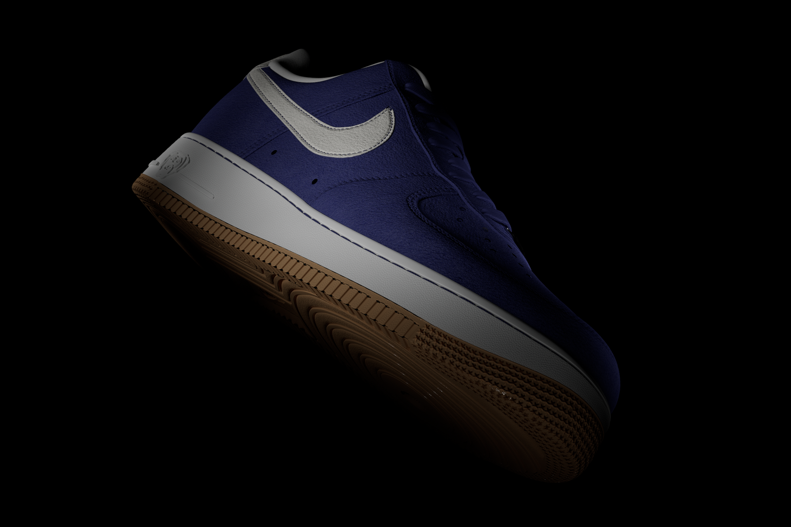
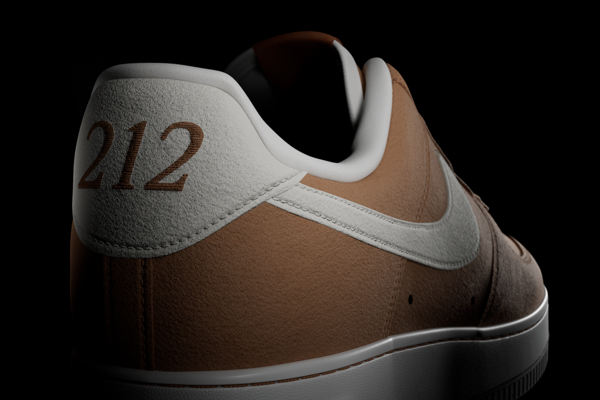
Tools
Unreal Engine 5MayaSubstance Painter
Asset Credit
Base shoe model: Air Force 1 Low Nike PBR by aimadbro (CGTrader). Texturing, materials, lighting, and rendering by Tyler Varacchi.